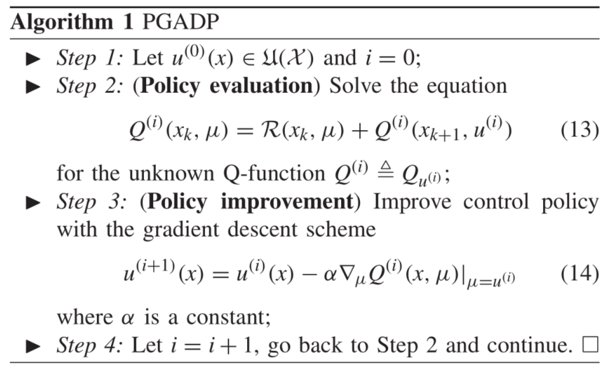
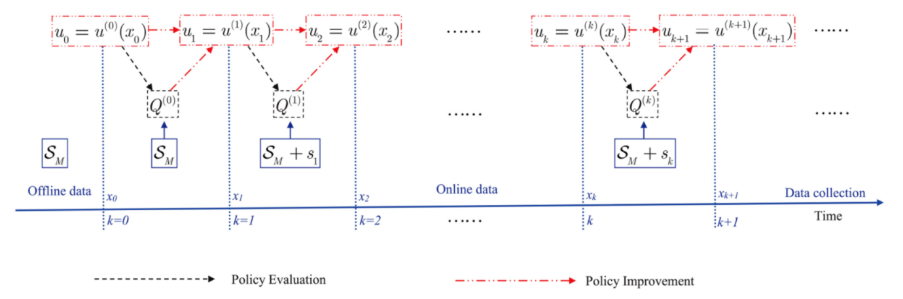

本文是对《Policy Gradient Adaptive Dynamic Programming for Data-Based Optimal Control》文章的整理归纳
期刊：《IEEE TRANSACTIONS ON CYBERNETICS》2019影响因子：11.079
这篇文章考虑了离散时间非线性系统的无模型的最优控制问题，提出了一个基于数据的策略梯度自适应动态规划算法（PGADP），使用离线和在线的数据而不是数学模型，使用梯度下降方法来改进策略，这篇文章还证明了PGADP算法的收敛性。
简介
最优控制问题一般需要求解一个复杂的Hamilton-Jacobi-Bellman equation，对于非线性系统，很难求出解析解，用ADP求解该方程在近年来取得了较大的成果。
主要分为三大类：
- model based：用ADP来近似求解HJBE
- partially model based：既用模型也用数据
- model free：模型未知，完全从数据中学习控制策略
问题描述
考虑如下非线性系统：
\[x_{k+1}=f\left(x_{k}, u_{k}\right)\]
这篇文章考虑了model-free的最优控制方法，也就是说，除了知道该系统是Lipschitz连续的，该系统\(f\left(x, u\right)\)是完全未知的。
最优控制器设计的目标是：找到一个反馈控制率\(u_{k}=u\left(x_{k}\right)\)，使得该系统构成的闭环系统在平稳点是渐进稳定的，同时，使得以下无穷时域的cost function最小化：
\[V_{u}\left(x_{0}\right) \triangleq \sum_{l=0}^{\infty} \mathcal{R}\left(x_{l}, u_{l}\right)\]
其中，\(\mathcal{R}(x, u) \triangleq S(x)+W(u)\)，和是正定矩阵。
优化问题可以描述成：
\[\min _{u} V_{u}\left(x_{0}\right)\]
最优控制策略是：
\[u^{*}(x) \triangleq \arg \min _{u} V_{u}\left(x_{0}\right)\]
策略梯度自适应动态规划算法
最优控制问题需要求解以下HJBE方程：
\[V^{*}\left(x_{k}\right)=\min _{u}\left(\mathcal{R}\left(x_{k}, u\right)+V^{*}\left(x_{k+1}\right)\right)\]
很显然，由于系统模型未知，解析解求不出来的。
给定一个容许控制策略：\(u(x) \in \mathfrak{U}(\mathcal{X})\)，定义它的状态价值函数，例如，可以采用上述定义的cost function作为它的状态价值函数：
\[V_{u}\left(x_{k}\right) \triangleq \sum_{l=k}^{\infty} \mathcal{R}\left(x_{l}, u\left(x_{l}\right)\right)\]
从上式经过一步展开可以得到如下递推表达式:
\[\begin{aligned} V_{u}\left(x_{k}\right) &=\mathcal{R}\left(x_{k}, u\left(x_{k}\right)\right)+V_{u}\left(x_{k+1}\right) \\ &=\mathcal{R}\left(x_{k}, u\left(x_{k}\right)\right)+V_{u}\left(f\left(x_{k}, u_{k}\right)\right) \end{aligned}\]
最优的状态价值函数可以表示成:
\[V^{*}(x) \triangleq V_{u^{*}}(x)=\min _{u} V_{u}(x)\]
再定义一个动作状态价值函数，或称为Q函数：
\[Q_{u}\left(x_{k}, \mu\right) \triangleq \mathcal{R}\left(x_{k}, \mu\right)+\sum_{l=k+1}^{\infty} \mathcal{R}\left(x_{l}, u\left(x_{l}\right)\right)\]
进一步可以写成：
\[\begin{aligned} Q_{u}\left(x_{k}, \mu\right) &=\mathcal{R}\left(x_{k}, \mu\right)+Q_{u}\left(x_{k+1}, u\right) \\ &=\mathcal{R}\left(x_{k}, \mu\right)+V_{u}\left(x_{k+1}\right) \end{aligned}\]
Q函数\(Q_{u}(x, \mu)\)表示：在状态\(s\)下，执行动作\(\mu\)后，计算出来的控制策略\(u^{*}(x)\)，所对应的性能指标值。
\[Q^{*}\left(x_{k}, \mu\right)=\mathcal{R}\left(x_{k}, \mu\right)+V^{*}\left(x_{k+1}\right)\]
求得的最优控制策略是：
\[u^{*}(x)=\arg \min _{u} V_{u}(x)=\arg \min _{\mu} Q^{*}(x, \mu)\]


数据分为两部分：离线数据和在线数据
离线数据：\(\mathcal{S}_{M}\)
\[\mathcal{S}_{M} \triangleq \left\{\left(x_{[l]}, \mu_{[l]}, x_{[l]}^{\prime}\right) \mid\left(x_{[l]}, \mu_{[l]}\right) \in \mathcal{D}, x_{[l]}^{\prime} \in \mathcal{X}, l=1,2, \ldots, M\right\}\]
离线数据可以通过任意的控制约束集中的控制动作进行采样获得。
在线数据：\(S_{k}\)
\[S_{k} \triangleq\left(x_{k-1}, u_{k-1}, x_{k}\right), k=1,2, \ldots\]
算法流程：
给定一个初始容许控制策略：\(u^{(0)}\)
使用离线数据\(\mathcal{S}_{M}\)计算\(Q\)函数：\(Q^{(0)}(x, \mu)\)
在\(k=0\)时刻，将\(u_{0}=u^{(0)}\left(x_{0}\right)\)应用到被控系统中，并获得在线数据\(s_1\)
通过Policy Improvement来求解\(u^{(1)}\)
同样的，利用离线数据\(\mathcal{S}_{M}\)计算\(Q\)函数：\(Q^{(1)}(x, \mu)\)
重复下去，直至收敛。
基于PGADP的actor-critic结构
仿真
\[x_{k+1}=\left[\begin{array}{c} \left(x_{k, 1}+x_{k, 2}^{2}+u_{k}\right) \cos \left(x_{k, 2}\right) \\ 0.5\left(x_{k, 1}^{2}+x_{k, 2}+u_{k}\right) \sin \left(x_{k, 2}\right) \end{array}\right]\]